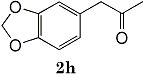
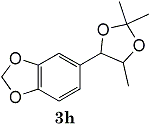

Summary:
Electrochemical Transformation of epoxides 1 to ketones 2 and acetonides 3 were achieved by using an electrogenerated acid catalyst. A combination of M(ClO4)n [M; Li, Na, Mg, n=1,2] with polar aprotic solvents [CH2Cl2, ClCH2CH2Cl, THF, CH3COCH3, AcOEt, (MeO)2CO] is useful for the electrochemical transformation.
Much attention has been paid to the electrochemical techniques as a potential tool in synthetic chemistry. Electrolysis procedure can be frequently employed for oxidation and reduction of organic compounds. However, very little is known about the acid-catalyzed reaction in an anodic process although several electrochemical reactions in MeCN-LiClO4-Pt1 and MeOH-LiClO4 or Et4NClO4-Pt systems2 have been explained in terms of an acid catalysis. We describe here a practical method for the transformation of epoxides 1 to ketones 2 and acetonides 3 promoted by a powerful electrogenerated acid. During our study, an electron-transfer chain reaction for an electrochemical ring opening of some epoxides has been proposed3. In contrast to this, the present electrochemical transformation of epoxides 1 to ketones 2 is an electrogenerated acid-catalyzed reaction.
A typical electrolysis condition is as follows; A mixture of 1a (0.2 mmol) and LiClO4 (1.0 mmol) dissolved in CH2Cl2 (7.5 ml) - THF (0.5 ml)4 was electrolyzed under a constant current (10 mA for 1 min, 0.03 F/mol) at room temperature using platinum foils as electrodes in an undivided cell, affording 2a (91%) and 8-benzyloxy-2,6-dimethyloct-1-en-3-ol (4a) (8%). The electrochemical transformation of 1 to 2 is characterized by the following facts:
- The reaction completes by passing a very small amount of electricity (0.02 - 0.1 F/mol),
- Without electrolysis no 2a was detected and 1a was recovered,
- By electrolysis in a divided cell 2a was obtained only from an anolyte and 1a was completely recovered from a catholyte,
- Ketone 2a was obtained in good yield (91%) even when 1a was allowed to react in a pre-electrolyzed solution5.
- Presence of pyridine (1 eq) in the pre-electrolyzed solution inhibited the conversion and no 2a was detected.
- In the prolonged electrolysis. a dark gray lithium metal deposited on the cathode and a check of pH revealed that the electrolysis solution was acidic,
- The electrolysis gave higher yield and selectivity than those of the usual acid-catalysis (Table 2).
Table 1
Rearrangements of Epoxides 1
to Ketones 2 and Acetonides 3
| Epoxide 1 | F/mol | Product 2a (3b) |
| a | 0.09 |
91% |
0.20 |
(86%)** |
|
| b | 0.06 |
74% |
0.17 |
(70%)* |
|
| c | 0.03 |
80% |
0.10 |
(87%)* |
|
| d | 0.04 |
88%** |
0.06 |
(83%) |
|
| e | 0.01 |
87%f |
0.10 |
(88%) |
|
| f | 0.03 |
88%** |
0.15 |
(85%) |
|
| g | 0.06 |
67% |
0.09 |
(83%)* |
|
h  |
0.06 |
82%c |
0.09 |
(85%)* |
|
| i | 0.12 |
72%c |
| j | 0.23 |
82%d |
0.72 |
(84%)*,g |
|
| k | 1.22 |
30% |
2.53 |
97%e |
a) 1 (0.2 mmol), LiClO4 (1 mmol)
and Et4NClO4 (0.5 mmol) in DCM
(a-g), ClCH2CH2Cl (h, i, j), DCM-THF
(k) (8 ml) at room temp.
Current density (mA/cm2) 6.7
(a,b,i,k), 3.3 (d,e,g,h,j) and 1.7 (c,f).
b) Yield of 3 is indicated by (%):
* LiClO4, ** Mg(ClO4)2.
c) At 75°C.
d) At 65°C.
e) Rxn in a pre-electrolyzed soln.
f) 1e (2.4 mmol)
g) 51°C
Table 2
Comparison between Acid-catalyzed
rearrangements
of 1a to 2a in DCM
| Acid | Time | Product 2a |
| Electrolysis |
1 min |
91% |
| CH3COOH |
12 h |
0% |
| 60% HClO4(aq) |
1 min |
77% |
| HCOOH |
12 h |
0% |
| TsOH |
1 min |
47%e |
| CF3COOH |
1 min |
49%b |
| 47% BF3-etheratec |
1 min |
77%d |
a) Reaction of 1a with 1 eq acid at RT.
b) Mono-TFA-diol (50%) obtained.
c) In benzene.
d) 7-BnO-2,2,5-trimethylheptanal
(16%) isolated as a by-product.
e) 4a (53%) as a by-product.
These experimental results strongly suggest that the electrochemical conversion is an electrogenerated acid-catalyzed reaction rather than an electron-transfer chain reaction3,6.
The mechanism on the generation of the electrogenerated acid is not uncovered yet. However. it is plausible that oxidation of a trace amount of water existing in the electrolysis solution would generate a naked acid in an unbuffered condition which is therefore extremely strong in aprotic solvents7.
The effect of electrolytes is important. Perchlorates such as LiClO4 (91%, 0.02 F/mol), NaClO4 (90%. 0.04 F/mol), and Mg(ClO4)2 (79%. 0.04 F/mol in THF) significantly promoted the conversion. Use of Et4NClO4 provided 2a in a good yield (89%) but it required more electricity (0.5 F/mol in CH2Cl2). Interestingly, use of Et4NOTs in CH2Cl2 led to the preferential formation of 4a (57%) although the current efficiency was unsatisfactory (3.1 F/mol). In contrast, both Et4NBr and CF3CO2Li did not give the desired ketones.
Use of Et4NBr in CH2Cl2 resulted in a recovery of 1a even after 3.7 F/mol of electricity was passed. On electrolyzing 1a with CF3CO2Li, debenzylation took place in part, affording benzaldehyde (21%) and 6,7-epoxy-3,7-dimethyloctan-1-ol (19%) along with the recovered 1a (70%) after 4.5 F/mol.
Aprotic solvents such as CH2Cl2 (91%), ClCH2CH2Cl (95%), THF (85%), Me2CO3 (75%), and AcOEt (76%) are useful for the purpose. However. use of MeCN (simply distilled once over P2O5) and MeOH (treated with Mg and distilled) did not promote the electrochemical reaction.
Similarly, the electrochemical conversion of 1 into acetonides 3 was performed by electrolyzing 1 in a distilled acetone containing LiClO4 or Mg(ClO4)2 at room temperature. Particularly noteworthy is the fact that the electrochemical acetonidation can be performed by use of a trace amount of LiClO4 (1% mol eq to 1c) and a catalytic amount of electricity (0.1 F/mol).
The selectivity of the acetonidation is strictly controlled by the concentration of LiClO4 ; [Acetonide 3c (%) : Ketone 2c (3) (LiClO4 mol eq to 1 ). 87:5 (0.01). 76:15 (0.2). 61:28 (2.0). 51:40 (12)]. Ketone 2c increased with the concentration of LiClO4 presumably because in the high concentration of the salt the intermediate carbenium ion would be significantly associated with LiClO4 as proposed by Pocket8. thus retarding nucleophilic attack of acetone. As an electrolyte. LiClO4 (87%. 0.1 F/mol). NaClO4 (84%. 0.16 F/mol), Mg(ClO4)2 (90% 0.1 F/mol), and LiBF4 (81%. 0.1 F/mol) were effective. However, Et4NClO4 gave poor yields and current efficiency (37%, 1.7 F/mol) and the use of Et4NBr or Et4NOTs resulted recovery of 1c even after 2.0 F/mol of electricity was passed.
The electrolysis of the corresponding diol of 1c in LiClO4 - acetone provided 3c (85%. 0.3 F/mol) although the current efficiency was lower than that of epoxide 1c (0.1 F/mol). In contrast to this. cyclohexene oxide gave cyclohexene diol (91%) as a sole product which could not be converted to the corresponding acetonide even when 1 F/mol of electricity was passed. This result suggests that acyclic diols also can be transformed into acetonides by the present electrolytic method.
The results of the electrochemical rearrangement of epoxides 1 to ketones 2 and acetonides 3 are summarized in Table 1.
Acyclic ω-epoxyisoprenoids 1a-1f were converted to 2a-2f and 3a-3f in satisfactory yields.
Functional groups involved in 1 (OH, OAc, SO2Ph, CHO, and C=C and C-C bonds) did not change in the electrolysis conditions.
Epoxides 1h derived from isosafrole provided 3,4-methylenedioxyphenyl-2-propanone (2h) (82%), a synthetic precursor of alpha-methyldopa9. Similarly, menthene oxide 1i gave a mixture of menthone and isomenthone (72%). Although epoxide 1j of a long chain fatty acid (erucic acid) is less reactive, it could be converted to the corresponding ketone 2i (82%) and acetonide 1i (84%). Electrolysis of 1k proceeded very slowly (1.22 F/mol), affording triphenylmethyl phenyl ketone 2k (10%) along with benzophenone (69%). In contrast, the reaction of 1k in a pre-electrolyzed solution provided 2k in 97% yield (After 2.53 F/mol, 1k was added to the pre-electrolyzed solution and stood for 2.5 h.).
The result of the electrochemical rearrangement (1 → 2) apparently demonstrates usefulness of the electrolysis method (Table 2) in comparison with the conventional chemical acid-catalyzed reaction. On the contrary to the electrolysis, the action of BF3 etherate in benzene which is one of the most widely employed reagents for the epoxide ring opening induced in part Wagner-Meerwein type rearrangement, affording 7-benzyloxy-2,2,5-trimethylheptan-1-al 16%) as a by-product along with the desired ketone 2a (77%).